AERO Explorer 5.1 照片來源與授權
Photos are licensed individually. Game code licensing does not replace image licenses. Real photographs and 360° panoramas are labeled separately from simulated geometry. Dates can be historical; coordinates are approximate site anchors unless specifically marked otherwise. All image changes are recorded below. CC BY-SA derivatives retain the stated license.
老忠實間歇泉
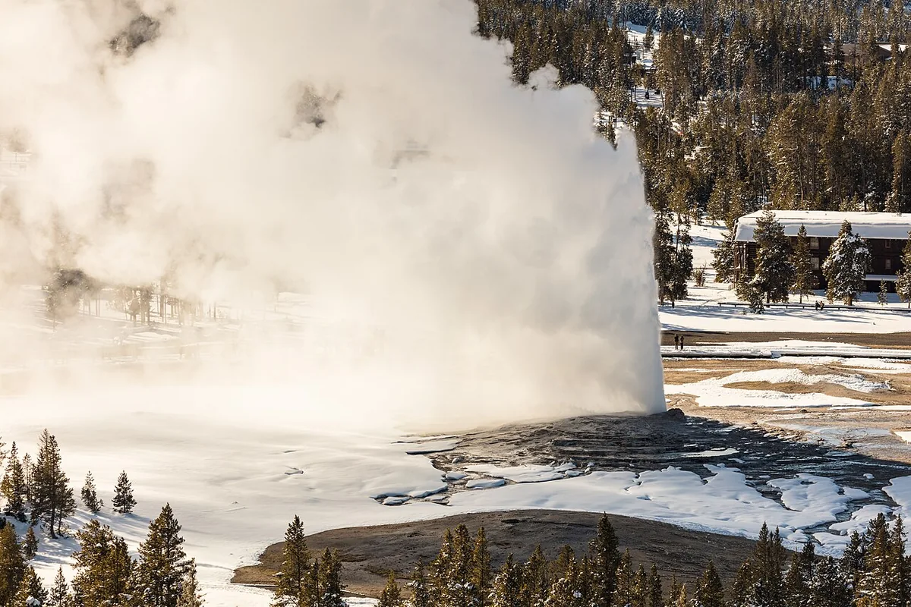
NPS / Jacob W. Frank · Public domain
原始來源 / Source
NPS / Jacob W. Frank / Public domain (U.S. government work)
2018-01-15 11:53 · Resized proportionally; encoded as WebP; no generative editing.
SHA-256: fdc477c5ed3fd37e687dc44cb2f535be7259617eeaa174e20c69258505c111d1
大稜鏡溫泉
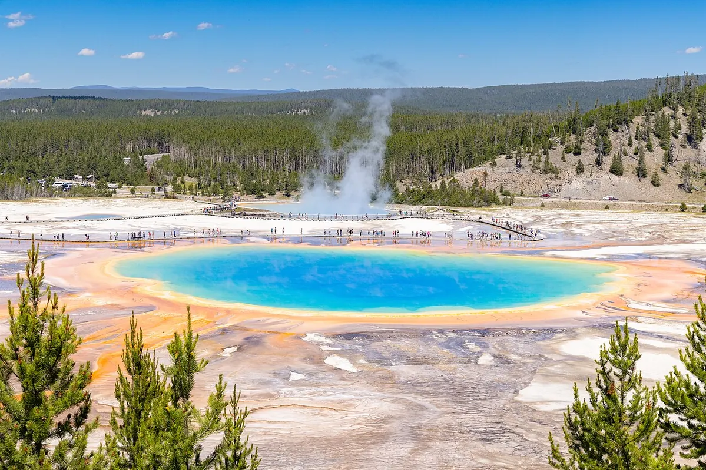
NPS / Jacob W. Frank · Public domain
原始來源 / Source
NPS / Jacob W. Frank / Public domain (U.S. government work)
Taken on 19 July 2023, 14:42:23 · Resized proportionally; encoded as WebP; no generative editing.
SHA-256: 72787c5d80bcbf321da85914ccf11cf84e541eaef2333deaaf82b22f85266c72
太平山見晴懷古步道
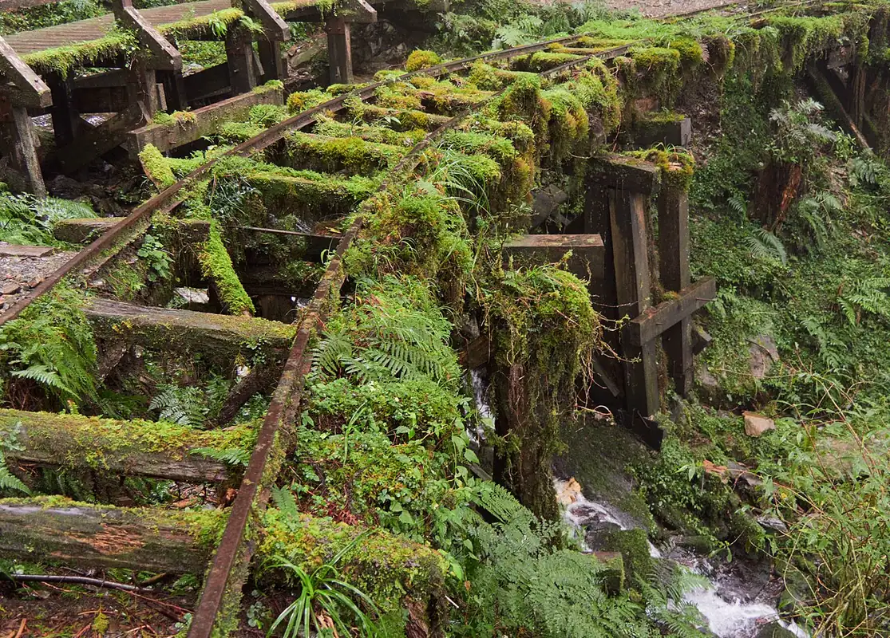
lumoplank · CC0
原始來源 / Source
lumoplank / CC0
before 10 August 2025date QS:P,+2025-08-10T00:00:00Z/7,P1326,+2025-08-10T00:00:00Z/11 · Resized proportionally; encoded as WebP; no generative editing.
SHA-256: 95d8b447076e6497050ca903a930c420ae9e402224b11c032a042939a54aa810
太平山蹦蹦車
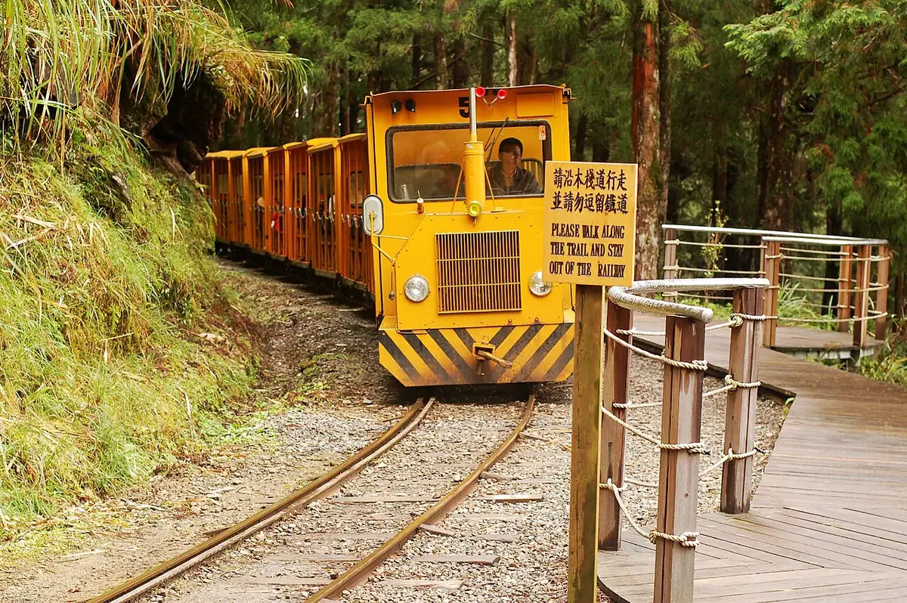
*嘟* · CC BY 2.0
原始來源 / Source
*嘟* / CC BY 2.0
Uploaded to Flickr on 4 Dec 2007 by *嘟*, upload to commons by Quatro Valvole on 1 Jan 2008. · Resized proportionally; encoded as WebP; no generative editing.
SHA-256: af51607e6e888918ea857f39815aaf0da091a7f47d3b4b8c8e79e0881e2e030b
翠峰湖
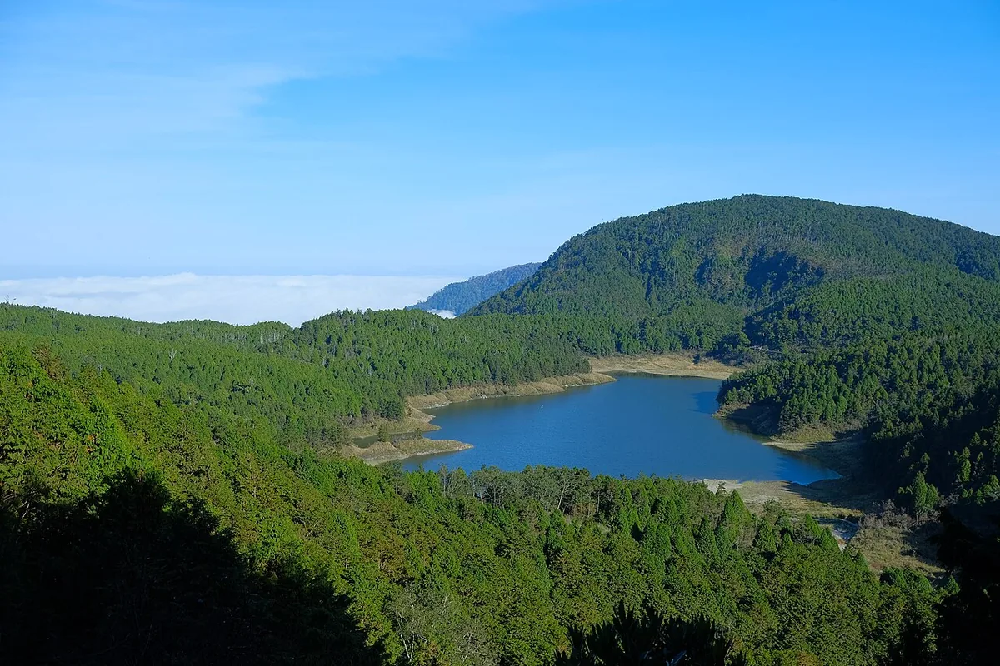
Taiwankengo · CC BY-SA 4.0
原始來源 / Source
Taiwankengo / CC BY-SA 4.0
2019-11-10 15:02:09 · Resized proportionally; encoded as WebP; no generative editing.
SHA-256: c5ccdef61fe702218993c5ec57d0c91314af5746358207789ddeea51870a71ab
臺北國立故宮博物院
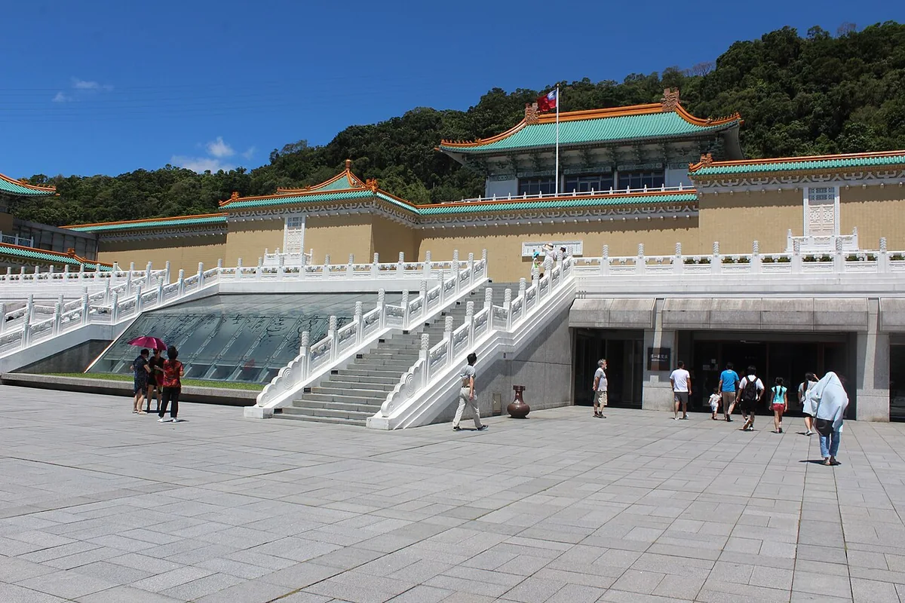
Jason Zhang · CC0
原始來源 / Source
Jason Zhang / CC0
2017-08-25 23:16:59 · Resized proportionally; encoded as WebP; no generative editing.
SHA-256: 253ff5795ebae157e48f52158c105898a9aec9d2963d15052a7fd507db8ae46c
翠玉白菜
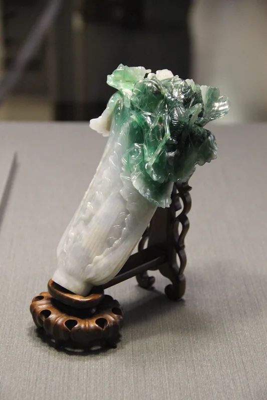
Gary Todd · CC0
原始來源 / Source
Gary Todd / CC0
2017-12-08 09:36:39 · Resized proportionally; encoded as WebP; no generative editing.
SHA-256: a2afe6d3c0c4e41545ec62218914099a4830c7378ad57371532cce44038d2e75
肉形石
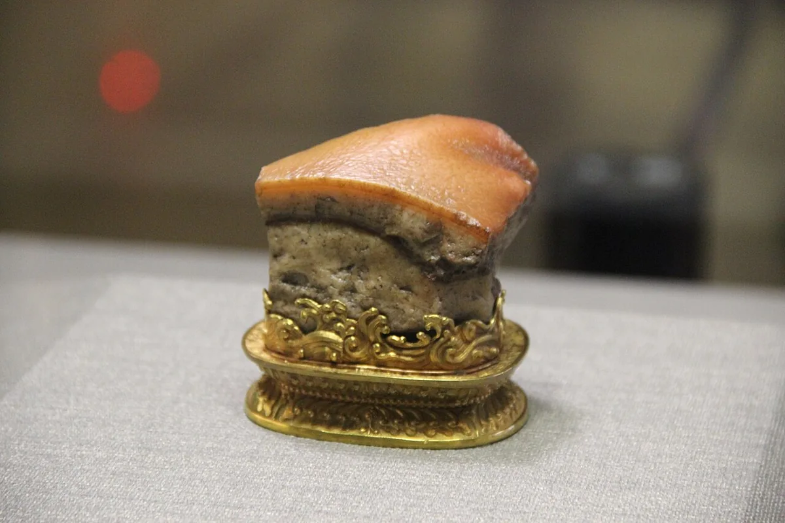
Gary Todd from Xinzheng, China · CC0
原始來源 / Source
Gary Todd from Xinzheng, China / CC0
2017-12-08 09:39 · Resized proportionally; encoded as WebP; no generative editing.
SHA-256: f5524bc1f2251820a7e99a4f779dacff005b138b3604dd581a98b69c9ece81f9
澄清湖九曲橋 — 1973
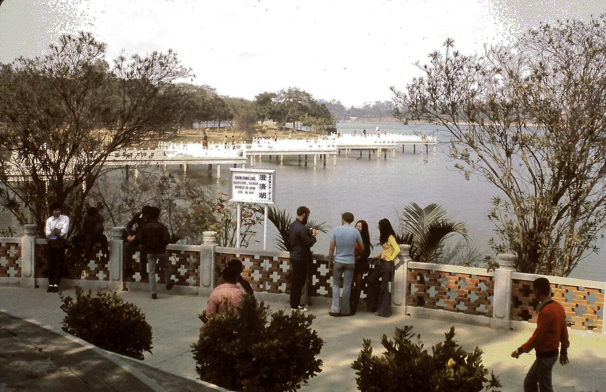
Born2bdigital304 · CC BY-SA 3.0
原始來源 / Source
Born2bdigital304 / CC BY-SA 3.0
1973/12/?? · Resized proportionally; encoded as WebP; no generative editing.
SHA-256: 641e2cc5baa62c5dfc0bd7d06f7144fa2907bb6508e34bca290a8a7d90e844b2
衛武營都會公園
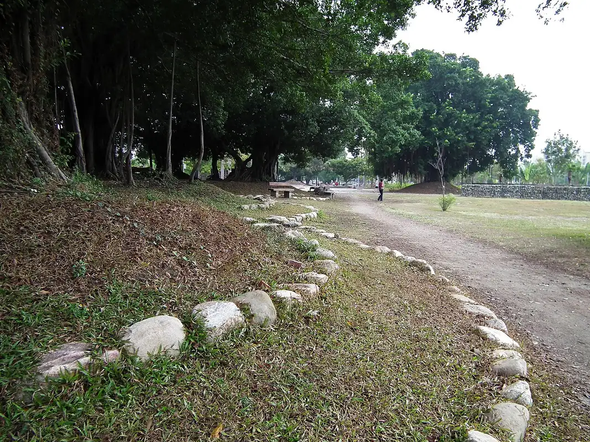
lienyuan lee · CC BY 3.0
原始來源 / Source
lienyuan lee / CC BY 3.0
Taken on 18 November 2012 · Resized proportionally; encoded as WebP; no generative editing.
SHA-256: b507aa9de9ad0dfee89c904be07c3c1ecedab2e1d9895df75417f61ec8edd10c
奧地利蒂羅爾凱撒山脈森林360°
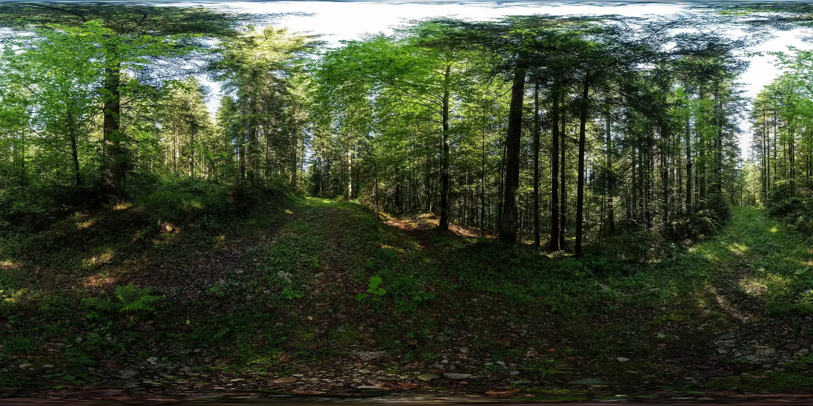
Ansgar Koreng · CC BY-SA 4.0
原始來源 / Source
Ansgar Koreng / CC BY-SA 4.0
2016-06-20 18:17 · Resized proportionally; encoded as WebP; no generative editing.
SHA-256: e676b52071f66e99c6a9c8a0a07e61847c03ca8e12e668707f0e6847e4910353
苗栗竹南博愛公園360°
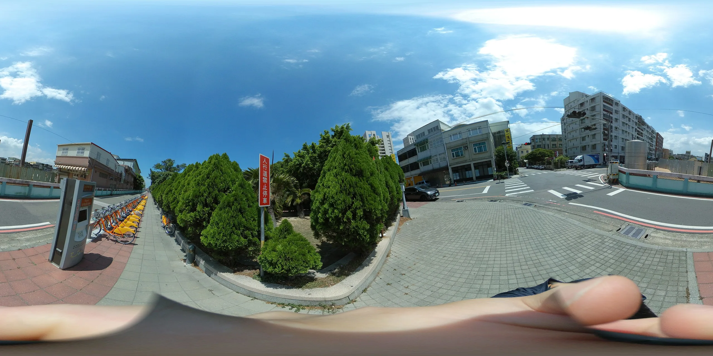
OnionBulb · CC BY-SA 4.0
原始來源 / Source
OnionBulb / CC BY-SA 4.0
2020-08-29 · Resized proportionally; encoded as WebP; no generative editing.
SHA-256: 4a8cc97a54cc403de154e3d8bc3a447453416c83e9d58567a343732b0ebda9cc
鳳儀書院
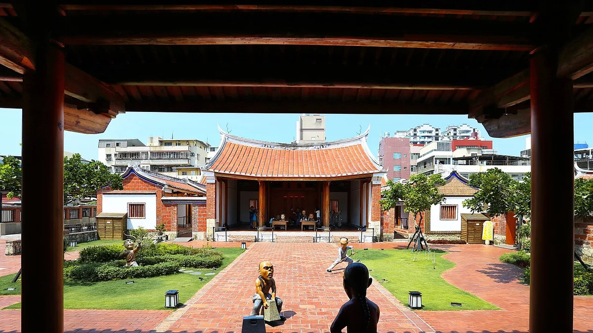
Mk2010 · CC BY-SA 4.0
原始來源 / Source
Mk2010 / CC BY-SA 4.0
2017-09-16 21:42:29 · Resized proportionally; encoded as WebP; no generative editing.
SHA-256: 90dd0e91958424b4ef34b5b91f268177151407064c9eb8f1fb28af9d50f838f5
澄清湖
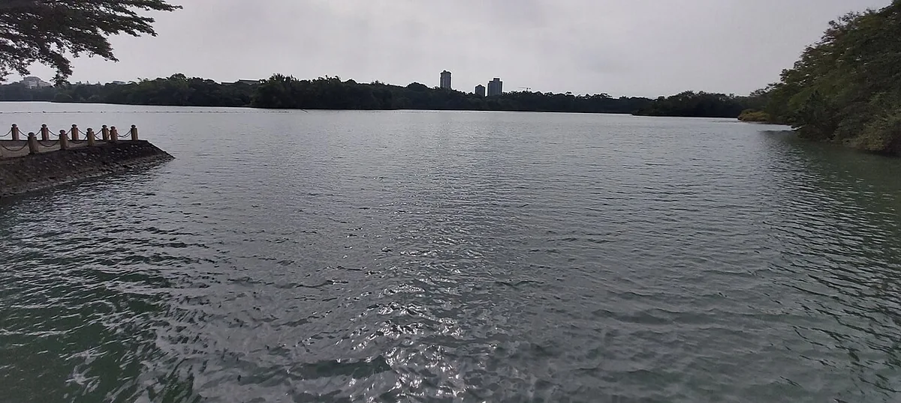
阿道 · CC BY-SA 4.0
原始來源 / Source
阿道 / CC BY-SA 4.0
2023-10-31 13:45:32 · Resized proportionally; encoded as WebP; no generative editing.
SHA-256: ab49f22f529d43c7400fead59804c30cd7ab641f73fe9494dd8a95806897f6d6
正修科技大學（2026）
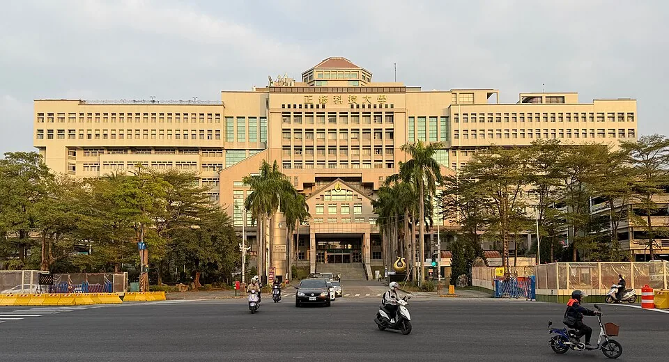
Yu tptw · CC BY-SA 4.0
原始來源 / Source
Yu tptw / CC BY-SA 4.0
2026-02-09 17:05:06 · Resized proportionally to at most 960×720; encoded as WebP; no generative editing.
SHA-256: 4077e1a2f72d779c3aa799c311758f17fdb70f7f8a402dca7120a0ab62d66f69
高雄果嶺自然公園（2026）
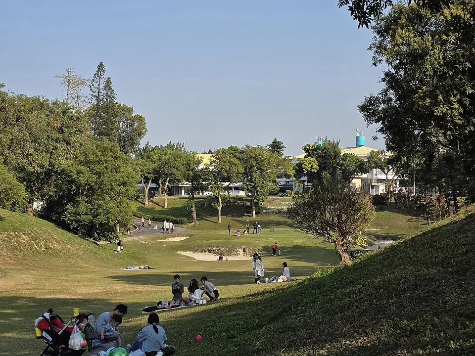
阿道 · CC BY-SA 4.0
原始來源 / Source
阿道 / CC BY-SA 4.0
2026-01-14 15:06:43 · Resized proportionally to at most 960×720; encoded as WebP; no generative editing.
SHA-256: f60cd8a04ce32658ca2cc5ea5d200ffca114c6afe51c5f91aa5e44bb1d5e272e
鳥松濕地大池
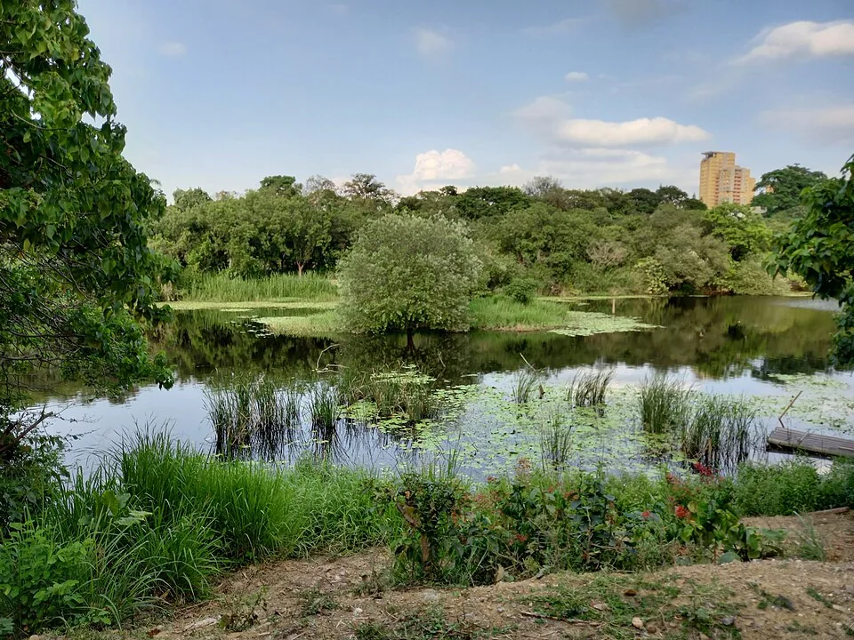
Sean Chiu · CC BY-SA 4.0
原始來源 / Source
Sean Chiu / CC BY-SA 4.0
2024-04-30 16:44:23 · Resized proportionally to at most 960×720; encoded as WebP; no generative editing.
SHA-256: f7a153b25fdee97a06df20ecb91e38fef64c8b68137873b93a82337075ee4fd9
衛武營國家藝術文化中心
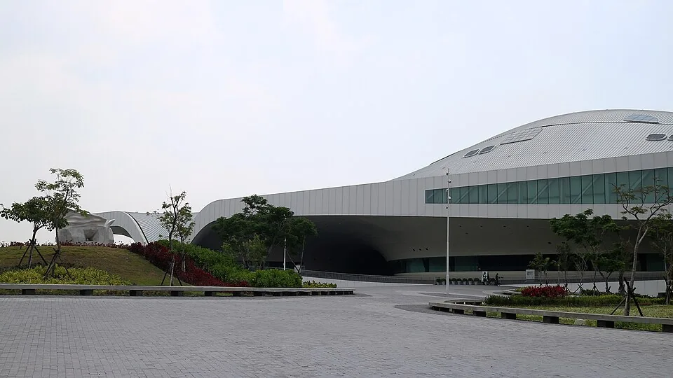
Jimmy3357569 · CC BY-SA 4.0
原始來源 / Source
Jimmy3357569 / CC BY-SA 4.0
2018-03-30 · Resized proportionally to at most 960×720; encoded as WebP; no generative editing.
SHA-256: 8b2f79ec1671beece3c5058b0c51b1af5d38db4fc5279ce03c2249ef7edc2fdf
大東文化藝術中心
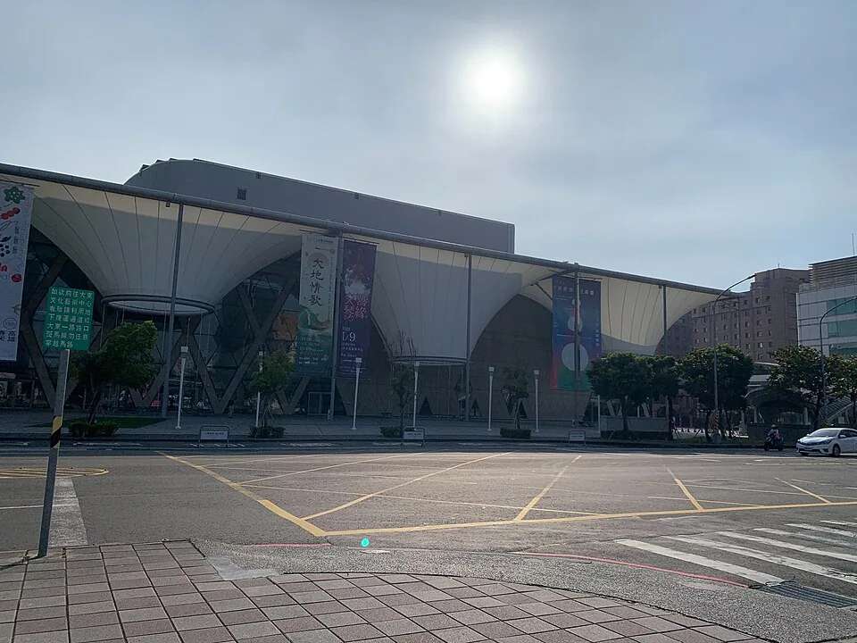
LingZhenWu · CC BY-SA 4.0
原始來源 / Source
LingZhenWu / CC BY-SA 4.0
2021-12-15 · Resized proportionally to at most 960×720; encoded as WebP; no generative editing.
SHA-256: df72808b02a5efc665ef6dff3068e84a27c22a7cbd3b3cb370b3f8024ee353c0
曹公廟正面（2024）
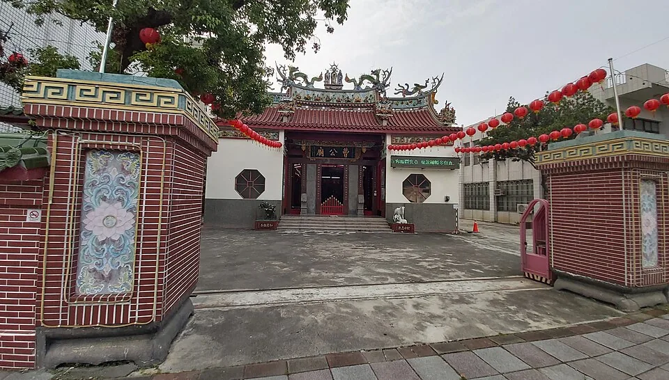
阿道 · CC BY-SA 4.0
原始來源 / Source
阿道 / CC BY-SA 4.0
2024-11-11 14:53:22 · Resized proportionally to at most 960×720; encoded as WebP; no generative editing.
SHA-256: 886fb4718d1adcd6adf235af16fe507b93dcad8197e09604c867403b69a18102
黃埔新村（2024）
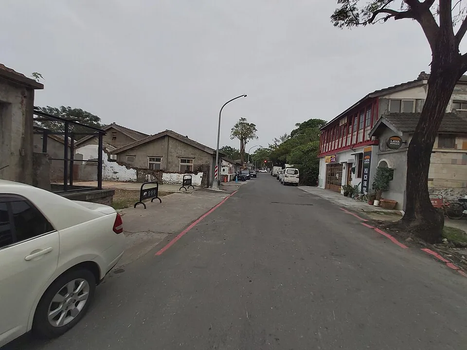
阿道 · CC BY-SA 4.0
原始來源 / Source
阿道 / CC BY-SA 4.0
2024-11-11 16:46:30 · Resized proportionally to at most 960×720; encoded as WebP; no generative editing.
SHA-256: 9a5d24fe0837176e605fd85ac579561abf0fff61e666ea201ce50ee2c4cab6f9
國立科學工藝博物館
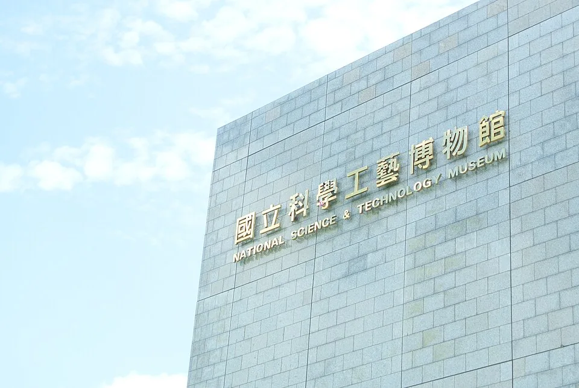
褒忠國中 雲端網 · CC BY 2.0
原始來源 / Source
褒忠國中 雲端網 / CC BY 2.0
2014-05-29 10:12:33 · Resized proportionally to at most 960×720; encoded as WebP; no generative editing.
SHA-256: dd99c55b22a2ecee87b43f4186c044cbd65804acbeb4e76804d7bc2fd073e611
鳳山龍山寺
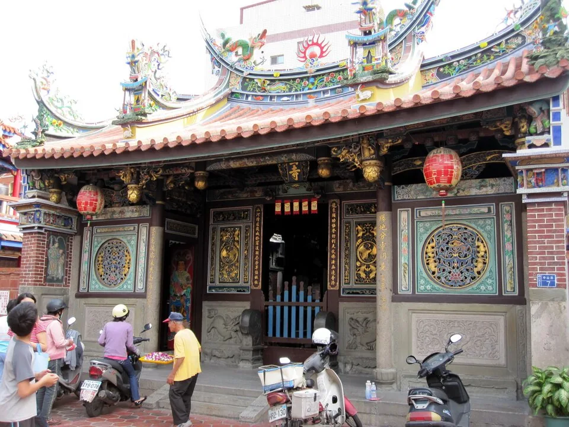
Jessepylin~commonswiki · CC BY-SA 3.0
原始來源 / Source
Jessepylin~commonswiki / CC BY-SA 3.0
2010-03-07 15:09 · Resized proportionally to at most 960×720; encoded as WebP; no generative editing.
SHA-256: d46bc7295f969299842cad83a3d9eaccbc92fb558e5b05bf8c0fb4ed6aec4e3c
金獅湖
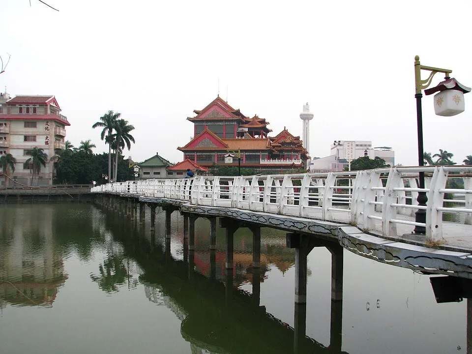
Pppighil · CC BY-SA 3.0
原始來源 / Source
Pppighil / CC BY-SA 3.0
2013-02-07 11:42:52 · Resized proportionally to at most 960×720; encoded as WebP; no generative editing.
SHA-256: 61f1157878f45d25dddf62d4bb4d24508e4916e954260df84e1d402086f79d78
西子灣夕陽
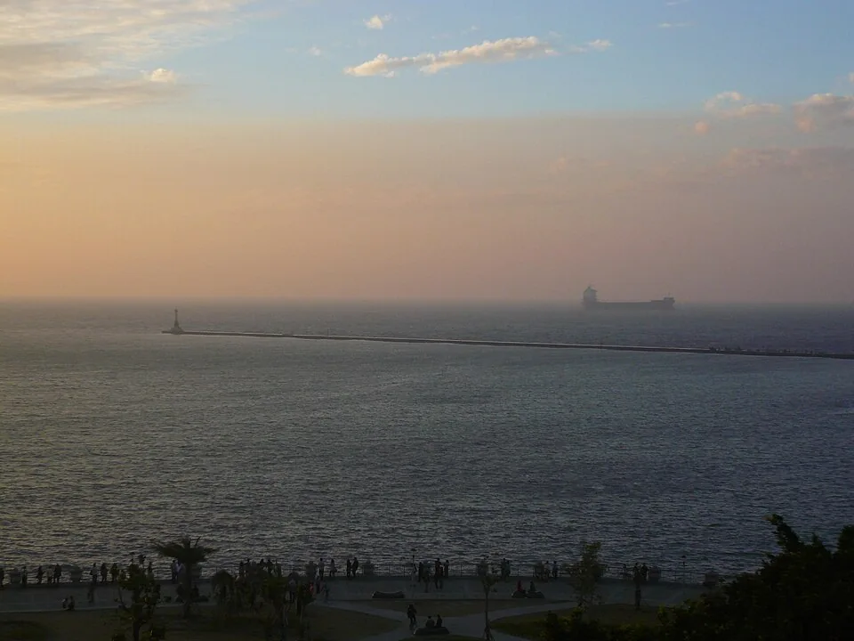
Pilzland · CC BY-SA 3.0
原始來源 / Source
Pilzland / CC BY-SA 3.0
2013-01-31 17:06:54 · Resized proportionally to at most 960×720; encoded as WebP; no generative editing.
SHA-256: 4f4dc6cb73a57f5ae2695998a482721e470e15f76f49c152277fa4aa89e8622f
高雄長庚星巴克門市室內（2013）
元創金屬科技有限公司 from TAIWAN · CC BY-SA 2.0
原始來源 / Source
元創金屬科技有限公司 from TAIWAN / CC BY-SA 2.0
2013 · Resized proportionally to at most 960×720; encoded as WebP; no generative editing.
SHA-256: 799b34ed7d6d69d7bfd52a28b7a1a718d7933375d8a764d7d99e72ad67f5b930
柏林舊國家美術館外部・360°
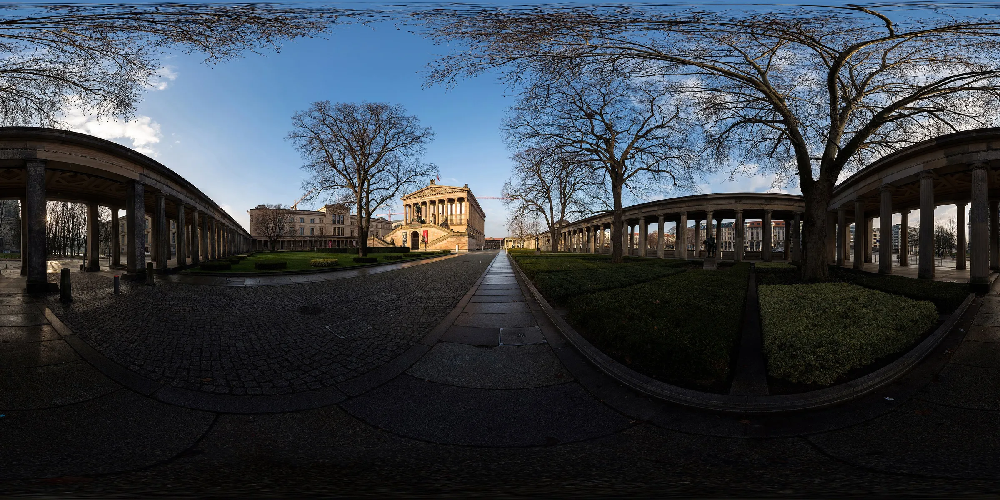
Ansgar Koreng · CC BY-SA 3.0 de
原始來源 / Source
Ansgar Koreng / CC BY-SA 3.0 (DE)
2016-01-01 11:40 · Resized proportionally and encoded as WebP. No generative editing.
SHA-256: a141acd2689b888e53767f39e5bd35a07d7ece671645c9253fa7a4adab619392
聖地牙哥 Los Peñasquitos 自然步道・360°
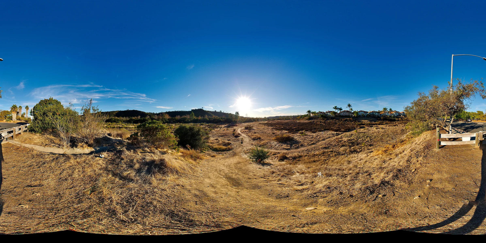
Troy Sankey · CC BY-SA 4.0
原始來源 / Source
Troy Sankey / CC BY-SA 4.0
2020-12-30 15:40:08 · Resized proportionally and encoded as WebP. No generative editing.
SHA-256: c0c896d16d159a9995e4e913931cf717dd5361e3fcf4101fa60641cdfad6b070
臺灣阿里山森林
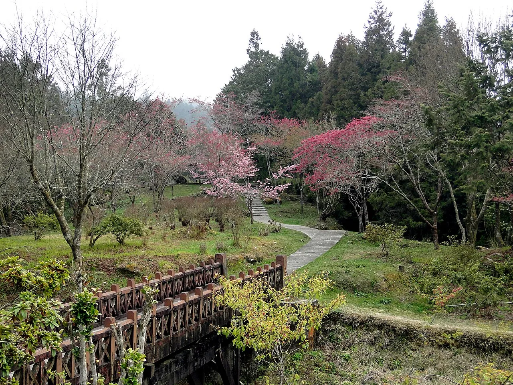
Bernard Gagnon · CC BY-SA 3.0
原始來源 / Source
Bernard Gagnon / CC BY-SA 3.0
2011-03-04 · Resized proportionally and encoded as WebP. No generative editing.
SHA-256: daa169d0cabff58c8a9d35d1c8eefff0e11b036a4d49cf72d04cdb91b37f6b97
臺灣日月潭
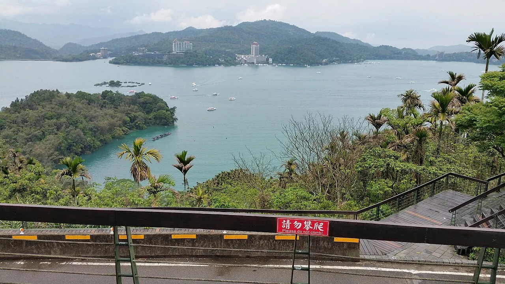
Photnart · CC BY-SA 4.0
原始來源 / Source
Photnart / CC BY-SA 4.0
2016-04-14 11:44:38 · Resized proportionally and encoded as WebP. No generative editing.
SHA-256: 90a9b218f9413c21263fb3adcc4ef5a3e2319c7348cb5942324f7d8be9e166c5
臺灣太魯閣牌樓
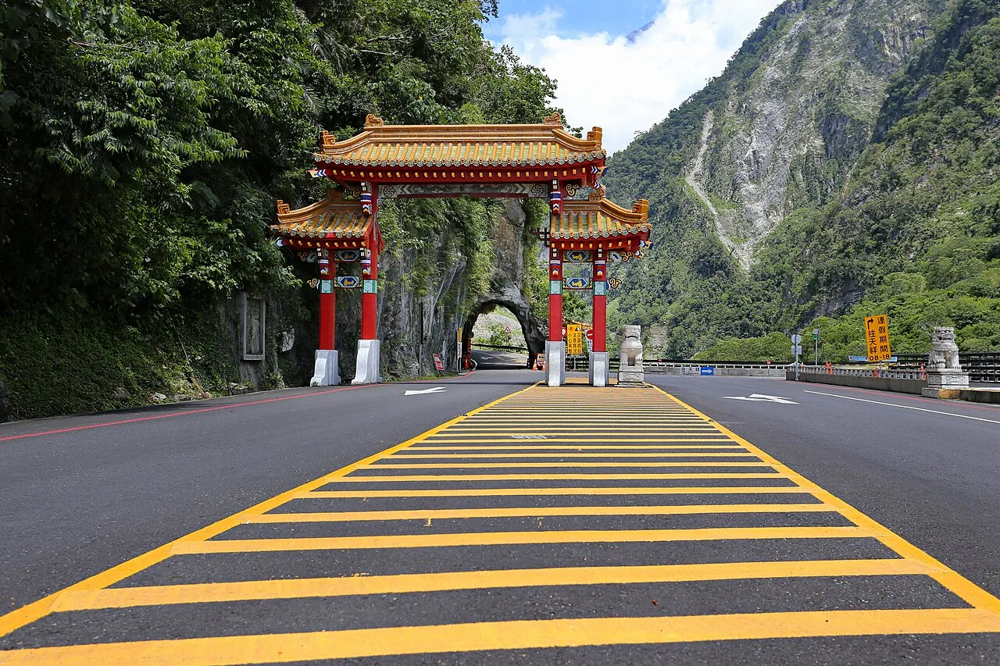
Mk2010 · CC BY-SA 4.0
原始來源 / Source
Mk2010 / CC BY-SA 4.0
2025-09-14 23:16:26 · Resized proportionally and encoded as WebP. No generative editing.
SHA-256: 6455f153378615451df74e047f59f73eac1150115aad2466f1cf01354c752cd9
臺灣太魯閣峽谷・2014 年照片
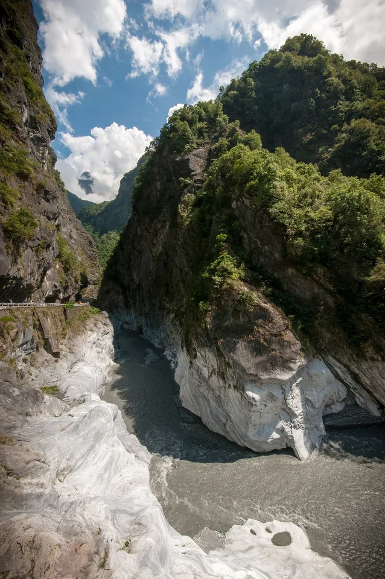
Andrewhaimerl · CC BY-SA 4.0
原始來源 / Source
Andrewhaimerl / CC BY-SA 4.0
2014-09-07 01:08:05 · Resized proportionally and encoded as WebP. No generative editing.
SHA-256: 7169c218297ce957be23775cb983ff303d689e5baae19f8407d9f4841aa76ba0
大堡礁 Mackay 礁珊瑚
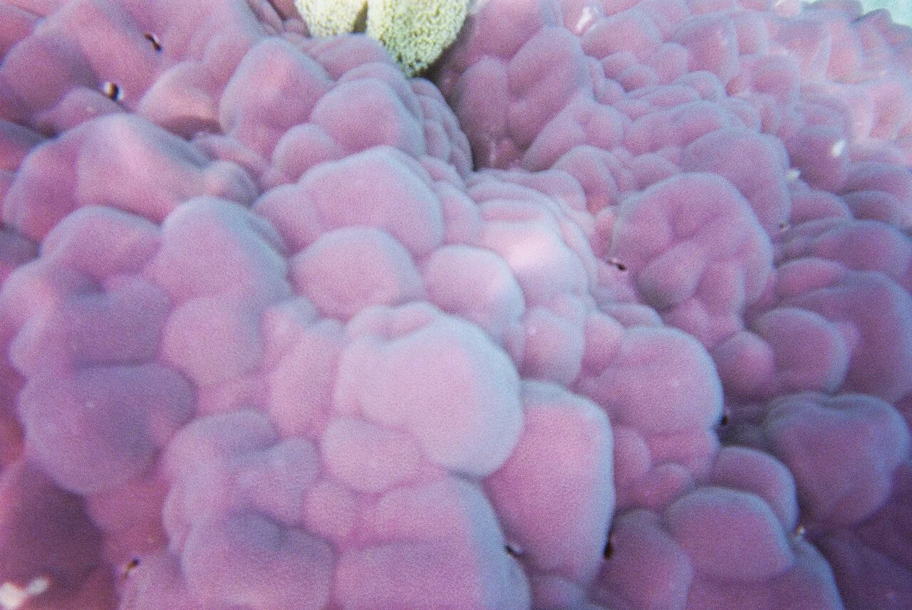
Peterdownunder · CC BY-SA 3.0
原始來源 / Source
Peterdownunder / CC BY-SA 3.0
2009-09-28 · Resized proportionally and encoded as WebP. No generative editing.
SHA-256: 27efbd6be39e9cb86e7a7e12ab273d42ab9df63e1d4d813a005e89ba4b0d1bdf
大堡礁 Norman 礁珊瑚群
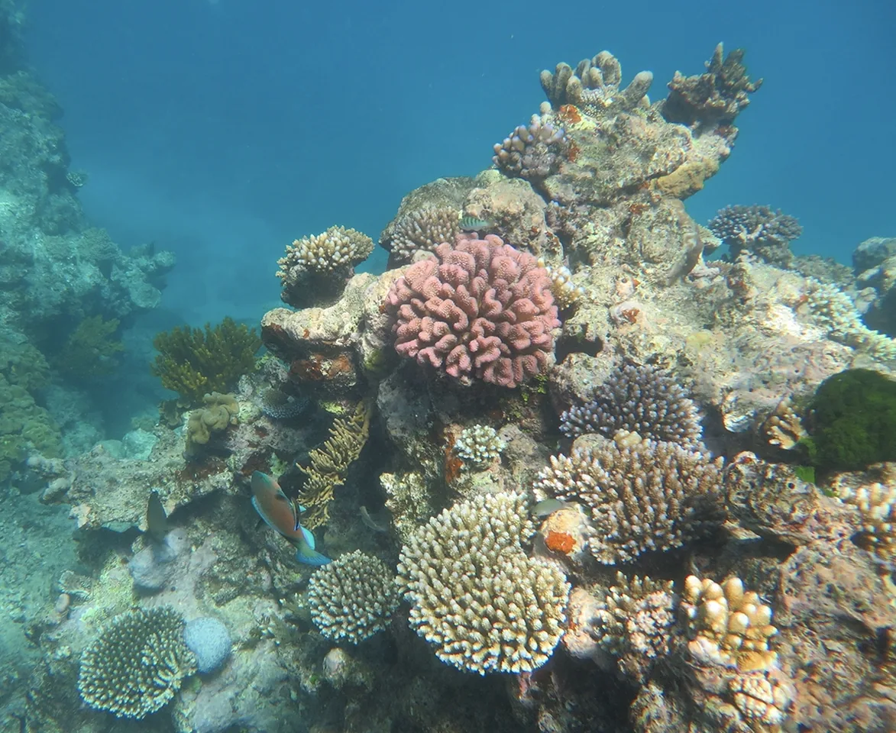
Rebecca Jackson · CC BY-SA 4.0
原始來源 / Source
Rebecca Jackson / CC BY-SA 4.0
2020-09-23 · Resized proportionally and encoded as WebP. No generative editing.
SHA-256: c909d997801b63c19b761a8334a156cb90f835a88864c2e1156fbcaf754f531a
大堡礁 Michaelmas 礁珊瑚
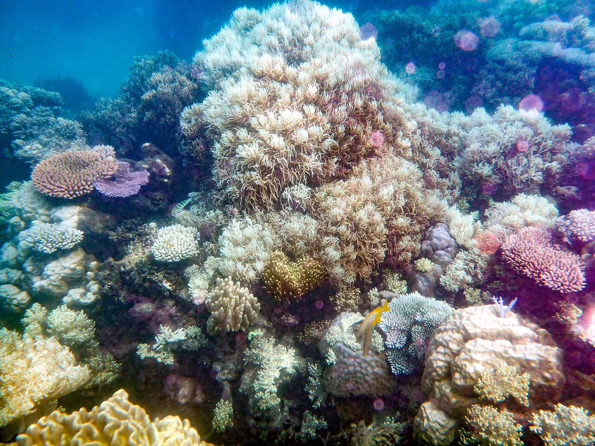
Gökhan Tolun · CC BY-SA 4.0
原始來源 / Source
Gökhan Tolun / CC BY-SA 4.0
2017-03-04 · Resized proportionally and encoded as WebP. No generative editing.
SHA-256: fd6d45b933e91f2ae1d72278e67fc6fbbcd116fa8f30725ceb1112a1e30b70f0
臺灣綠島的點斑鼻魚
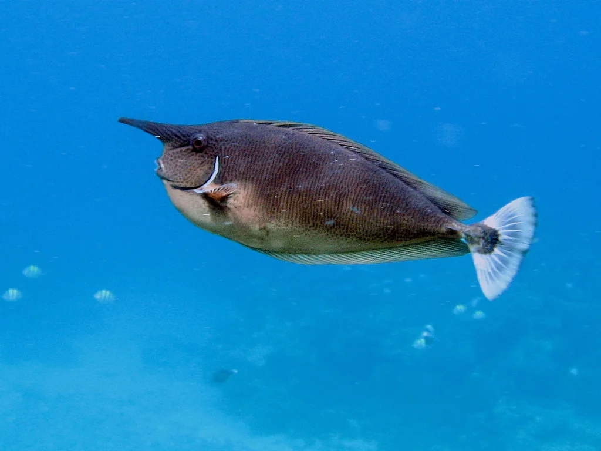
Divervincent · CC BY-SA 3.0
原始來源 / Source
Divervincent / CC BY-SA 3.0
2008-08-07 · Resized proportionally and encoded as WebP. No generative editing.
SHA-256: 65ce530ef2d6f1988ad518ff06e28bab98f7fb916fae00fb1711adeea8100cd2
臺灣綠島石朗的白條海葵魚
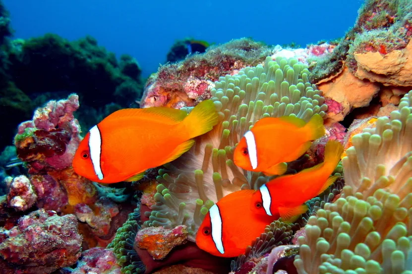
Longdongdiver · CC BY-SA 3.0
原始來源 / Source
Longdongdiver / CC BY-SA 3.0
2011-11-19 · Resized proportionally and encoded as WebP. No generative editing.
SHA-256: 6e765caca728c7b2404ceac0cb8325e733e1b9295211e26220790d6bf09d20ca
貝里斯大藍洞珊瑚
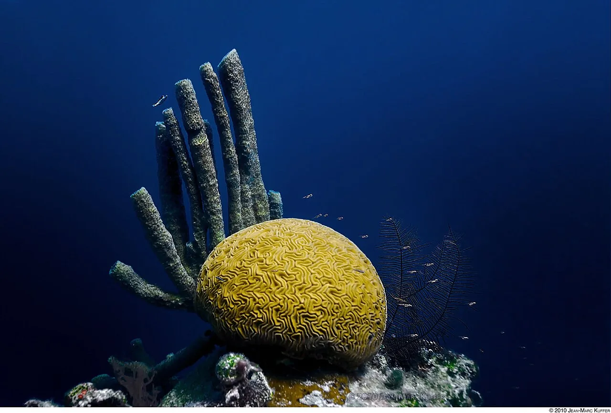
jayhem from Antibes, France · CC BY-SA 2.0
原始來源 / Source
jayhem from Antibes, France / CC BY-SA 2.0
2008-12-27 · Resized proportionally and encoded as WebP. No generative editing.
SHA-256: 163d8c583e3418e4edd1b8a2b9f390056653ffe1f12cd9e2dcf9770b7863e15a
印尼四王群島 Arborek 水下珊瑚
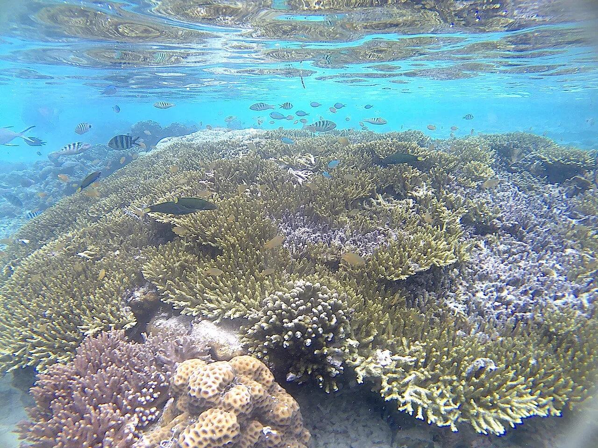
Akbar raf · CC BY-SA 4.0
原始來源 / Source
Akbar raf / CC BY-SA 4.0
2017-09-09 11:11:44 · Resized proportionally and encoded as WebP. No generative editing.
SHA-256: 24c26a392f8ffcf38523b47dfeb5a162b2fb5e11732edf327cc10abd02d22468
印尼四王群島 Gam 島珊瑚
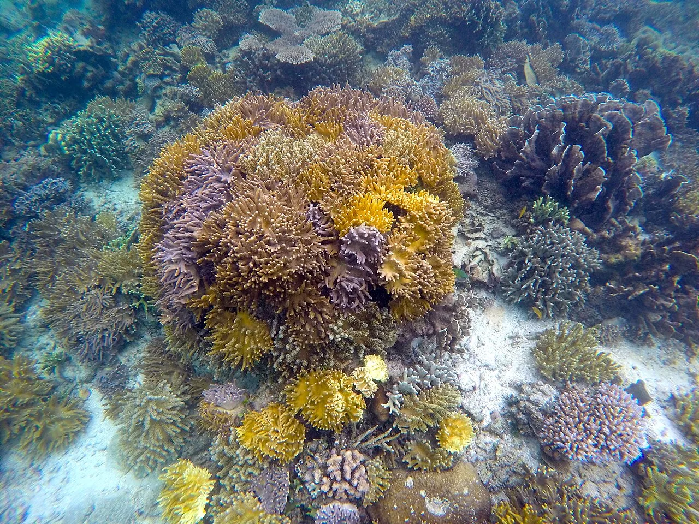
Fabian Lambeck · CC BY-SA 4.0
原始來源 / Source
Fabian Lambeck / CC BY-SA 4.0
2015-12-01 12:39:10 · Resized proportionally and encoded as WebP. No generative editing.
SHA-256: 737a28ee90b9e78aee16b282eff654bf3e84d9a238eec01e5495a72ceebe7bbc
冰島 Silfra 裂隙
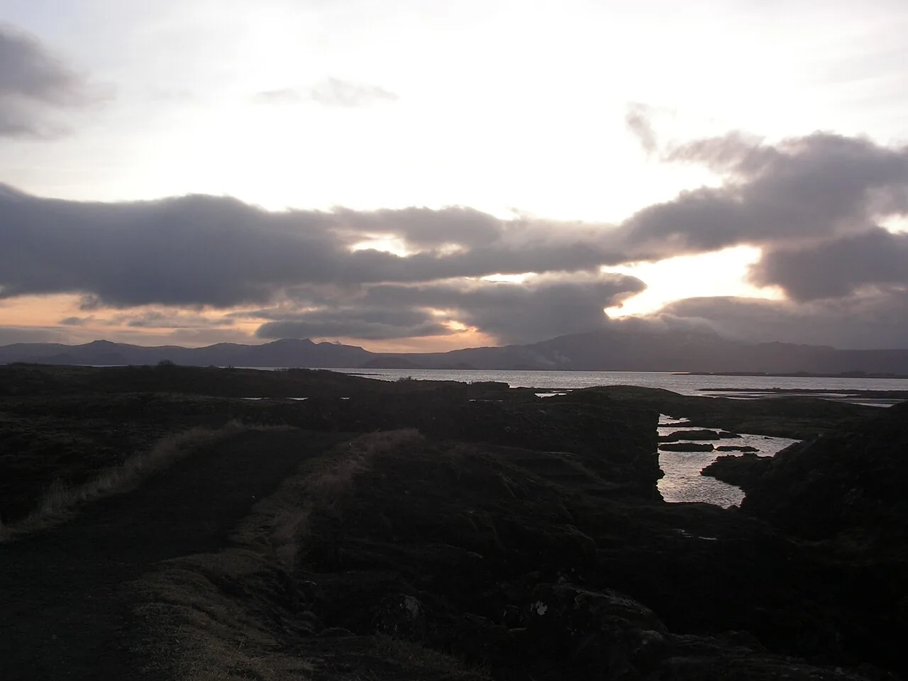
Fancy-cats-are-happy-cats · Public domain
原始來源 / Source
Fancy-cats-are-happy-cats / Public domain
2011-01 · Resized proportionally and encoded as WebP. No generative editing.
SHA-256: 74bc557344b1b42d8503cb11e2427a9a87924c0d492d6472477089640ca4c992
紐約港自由女神像
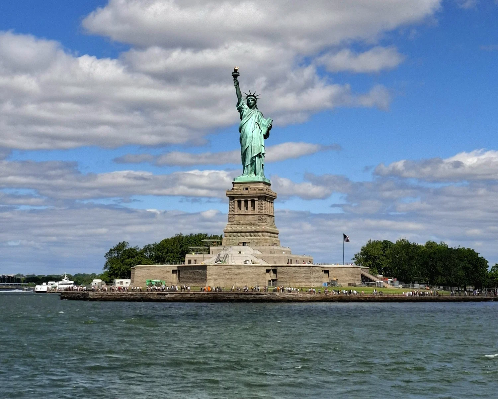
VynedJ · CC BY 4.0
原始來源 / Source
VynedJ / CC BY 4.0
2024-06-24 10:37:47 · Resized proportionally and encoded as WebP; no generative alteration.
SHA-256: 3b6c77b3afad8246827fcb119e1a0c47ac65c2050be11c805f7c15051f81b969
舊金山金門大橋
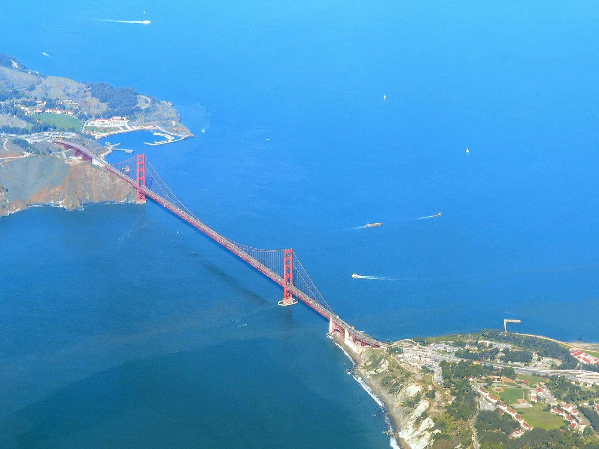
Michael Hanselmann (www.MichaelHanselmann.de) · CC BY-SA 4.0
原始來源 / Source
Michael Hanselmann (www.MichaelHanselmann.de) / CC BY-SA 4.0
2018 · Resized proportionally and encoded as WebP; no generative alteration.
SHA-256: c1fddcb41daa8005ea4d4dab2b1e9c770731f98251eb05b8e3af8158d70d00df
澳洲 Port Giles 穀倉
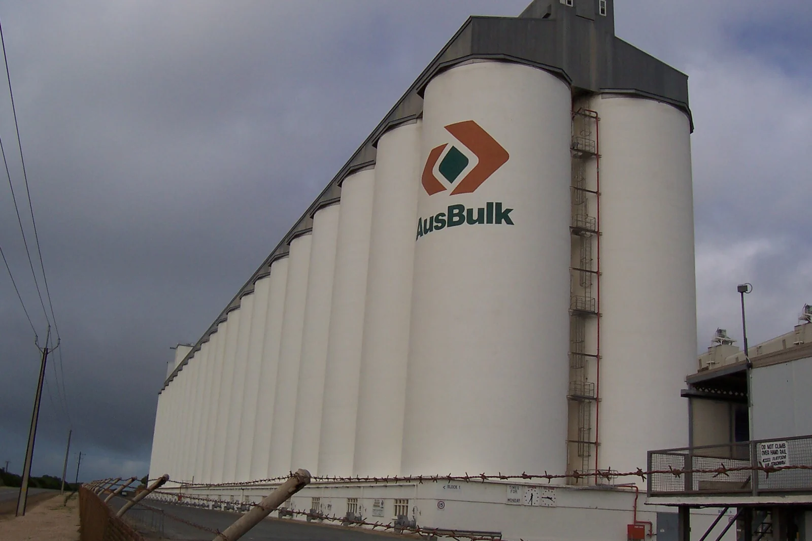
Scott Davis · CC BY-SA 3.0
原始來源 / Source
Scott Davis / CC BY-SA 3.0
· Resized proportionally and encoded as WebP; no generative alteration.
SHA-256: 82f8a669386bb3b73072726c07f810dfa28670e82cd0a8871abd69cbd220cd40
高雄駁二大勇倉庫 P2
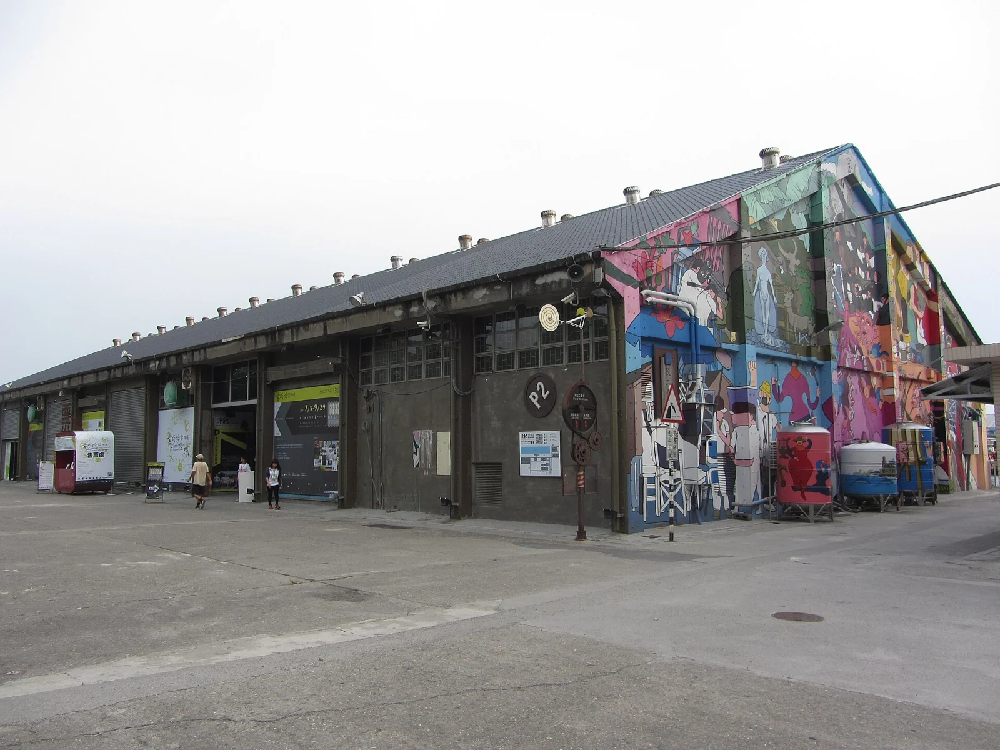
SSR2000 · CC BY-SA 3.0
原始來源 / Source
SSR2000 / CC BY-SA 3.0
2013-07-10 · Resized proportionally and encoded as WebP; no generative alteration.
SHA-256: ba585dd76a3a924a9563a6d4adc57104ea7cbbffa967ad781597d1e73b27c97d
美國 Nellis 太陽能場
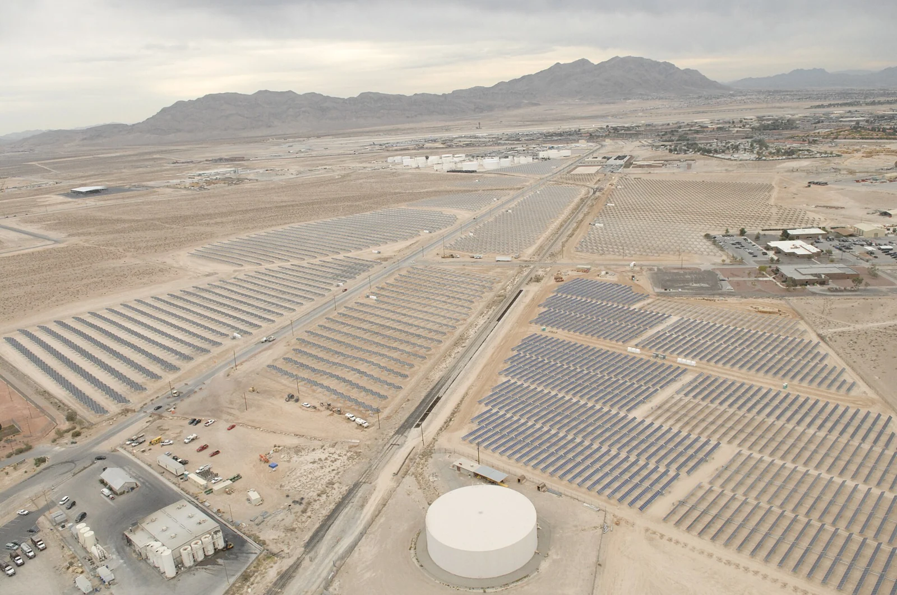
(U.S. Air Force photo by Master Sgt. Robert Valenca) · Public domain
原始來源 / Source
(U.S. Air Force photo by Master Sgt. Robert Valenca) / Public domain
2007-11-09 · Resized proportionally and encoded as WebP; no generative alteration.
SHA-256: 9e1ded7df97ce8cb54c4df8bcdaab70c4f29fe19d4a676fbcebb3f238f66d339
桃園林口長庚紀念醫院
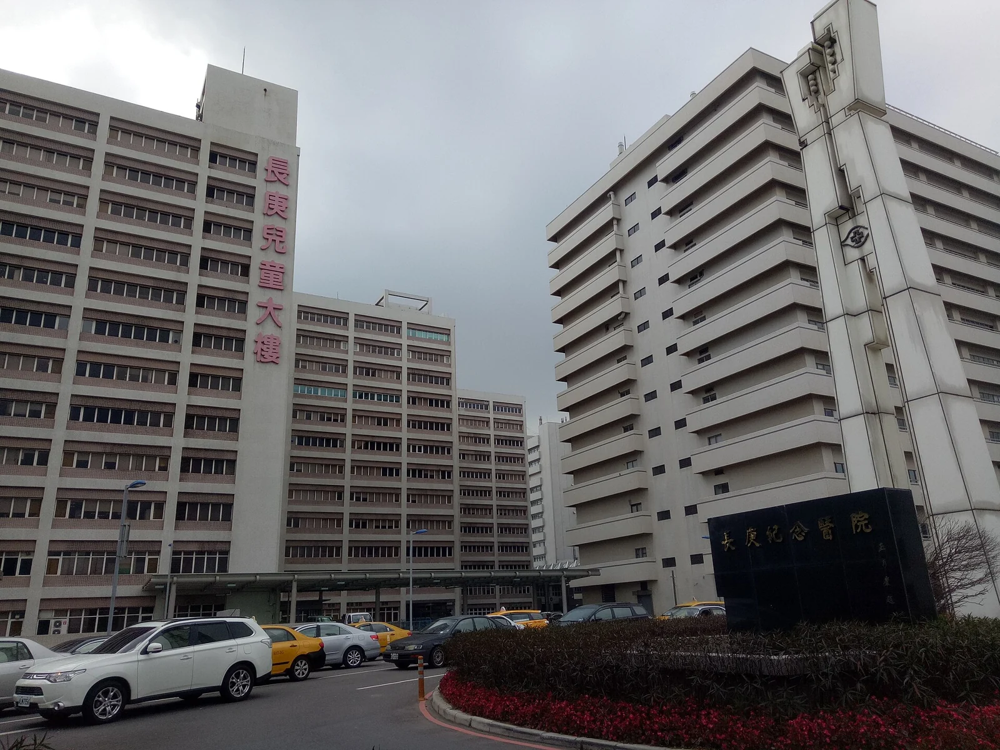
Foxy1219 · CC BY-SA 4.0
原始來源 / Source
Foxy1219 / CC BY-SA 4.0
2017-02-20 12:19:10 · Resized proportionally and encoded as WebP; no generative alteration.
SHA-256: 96dfb7de2a91b8029df77f031a29d2e94888fc433baf998371278bb6d51e350c
花蓮太魯閣九曲洞
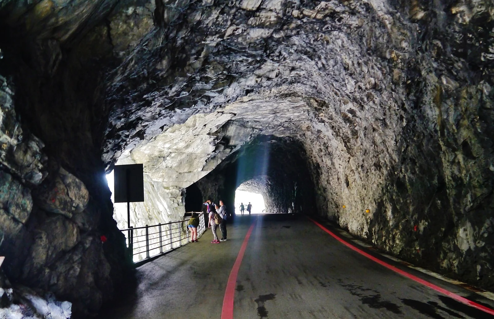
Zairon · CC BY-SA 4.0
原始來源 / Source
Zairon / CC BY-SA 4.0
2016-11-15 09:57:01 · Resized proportionally and encoded as WebP; no generative alteration.
SHA-256: 39adc7d4a735ffcaedcd02715c961742b1392a83f82a282715fb2b285ae3d86c
花蓮天王星大樓周邊：2024 年震災紀錄
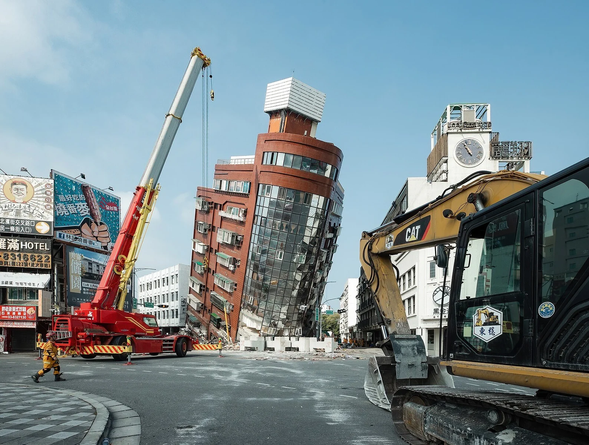
總統府 / Official Photo by Shufu Liu / Office of the President
Perspective correction made by Basile Morin from the original version. · CC BY 2.0
原始來源 / Source
總統府 / Official Photo by Shufu Liu / Office of the President
Perspective correction made by Basile Morin from the original version. / CC BY 2.0
2024-04-03 · Resized proportionally and encoded as WebP; no generative alteration.
SHA-256: 734c37d1eeebdaa98494ed4a454d66bb860e09824d37b94166d1d09fab0062e2
夏威夷考艾島 Barking Sands 外海
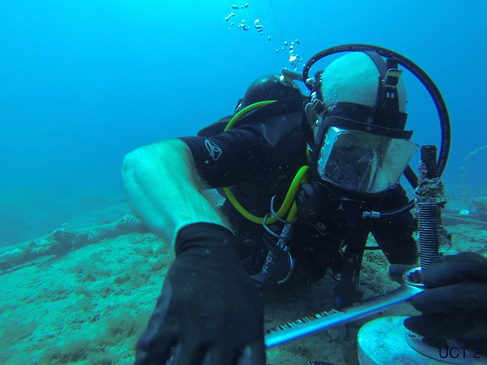
U.S. Navy / MC2 Daniel Nichols · Public domain
原始來源 / Source
U.S. Navy / MC2 Daniel Nichols / Public domain
2014; source caption July 31, EXIF July 14 · Resized proportionally and encoded as WebP; no generative alteration.
SHA-256: 02b6996e8fe8ba219ee7211e3ebb20563ab9a62b29779aee6da1ceb724e29a00
俄羅斯瓦德湖：水下植被
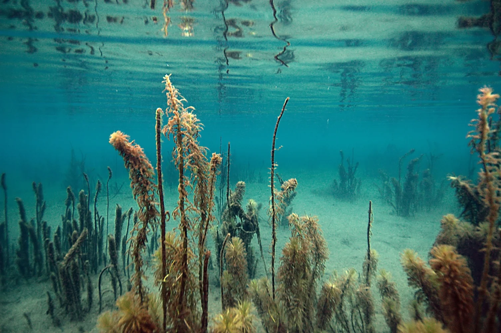
Mikhail Vedyokhin · CC BY-SA 2.5
原始來源 / Source
Mikhail Vedyokhin / CC BY-SA 2.5
· Resized proportionally and encoded as WebP; no generative alteration.
SHA-256: 387daccfc40a4dcd25ecaf00ccf7a8fbf70eb74c4c82dd95e6c2fbc9c4ad2121
俄羅斯瓦德湖：湖底紀錄
Mikhail Vedyokhin · CC BY-SA 2.5
原始來源 / Source
Mikhail Vedyokhin / CC BY-SA 2.5
2007-03-14 · Resized proportionally and encoded as WebP; no generative alteration.
SHA-256: 5318c2947e6181159d676a70701a170ab65502fd1c793a5b75a28c9357743cd3
峇里島土蘭奔 USAT Liberty 沉船
Tilonaut · CC BY 3.0
原始來源 / Source
Tilonaut / CC BY 3.0
29 May 2017, 13:17:12 (UTC) · Resized proportionally and encoded as WebP; no generative alteration.
SHA-256: fe29011b99fca338f2e71a2ced2b4f629d88b217b38ba22f21636249de80c7f6
佛羅里達 Pennekamp 珊瑚礁公園 Minnow Cave
Lonesome Crow · CC BY-SA 3.0
原始來源 / Source
Lonesome Crow / CC BY-SA 3.0
Upload dated 2009-05-31; capture date not specified · Resized proportionally and encoded as WebP; no generative alteration.
SHA-256: 048488391eff183c3a5d6a13538f5c808fdb129f0b87e8bb412e62a8dacbeb60
迪亞哥加西亞島碼頭水下樁柱
U.S. Navy / MC1 Gary Keen · Public domain
原始來源 / Source
U.S. Navy / MC1 Gary Keen / Public domain
Source caption 2015-01-19; EXIF 2012-09-21 (conflicting dates retained) · Resized proportionally and encoded as WebP; no generative alteration.
SHA-256: 70a2f0749b83c5a57c820128a12ef1c76292dcdf3e90ef56d1cc9d3f02ea8aeb
高雄港區歷史倉庫
WEI, WAN-CHEN（魏琬臻） · CC BY-SA 4.0
原始來源 / Source
WEI, WAN-CHEN（魏琬臻） / CC BY-SA 4.0
2019-09-20 15:53:59 · Resized proportionally and encoded as WebP; no generative alteration.
SHA-256: 1c8edd47b148ecfe4e8052f90a9424452fc617d15578538940cabaf156dbf849
自由島望向曼哈頓與紐約港
Percival Kestreltail · CC BY-SA 3.0
原始來源 / Source
Percival Kestreltail / CC BY-SA 3.0
Taken on 23 April 2021, 14:33:49 · Resized proportionally and encoded as WebP; no generative alteration.
SHA-256: 069ce7fb5ec2c1cf25fc6ad475f9e0dcdaa039c116cb64ed9aaf4a3e1d5f045a
.jpg){kind=link}
.jpg){kind=link}


_(27228557209).jpg){kind=link}


.jpg){kind=link}


_2014-05-29.jpg){kind=link}


.jpg){kind=link}


.jpg){kind=link}


.jpg){kind=link}


.jpeg){kind=link}

.jpg){kind=link}